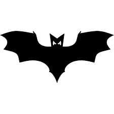

<div id="logo-container"></div>
<batcat-main-menu></batcat-main-menu>
<div class="logout-container">
  <a mat-raised-button color="accent" routerLink="/log-in" routerLinkActive="active"
     ariaCurrentWhenActive="page">Log in</a>
</div>
